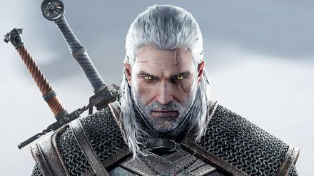
CD Projekt RED · The Witcher 3: Wild Hunt
Vyplňujte v prohlížeči nebo tiskněte jednotlivé listy. Zápis se automaticky neukládá; před zavřením stáhněte TXT nebo vytiskněte vyplněné stránky. Bez odesílání dat. Listy 2–4 a 5–8 jsou varianty k výběru, ne povinná hromada úkolů.
VHS · P06 · pracovní list 1/8 · 1. 11. 2026
U každé postavy navrhněte archetyp a krátce jej zdůvodněte. Opřete se o to, co chce a co dělá. Protagonista, záporák či mentor jsou jiné osy popisu; „bojovník“ je povolání.
Tyto tři příklady pocházejí z odborného článku Beyond the Hero. Po vlastní odpovědi je porovnáme s převažujícím zařazením v jeho lidských anotacích — nikoli s univerzální „správnou odpovědí“.

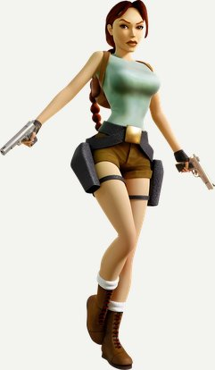
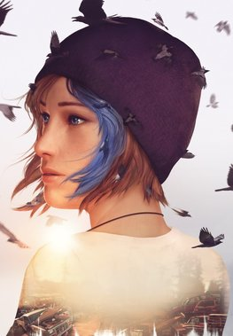
Pracovní rámec článku a popularizačního přehledu Writers Write; nikoli diagnóza nebo jediná teorie postav. Uveďte konkrétní díl / období, pokud na něm odpověď závisí.
VHS · P06 · pracovní list 2/8 · 1. 11. 2026
The Last of Us — příběh první hry; obrázek Tess pochází z remaku Part I.
Zvolte jednu část příběhu. Není nutné použít tři různé archetypy. Nerozhodujte podle povolání ani vzhledu.
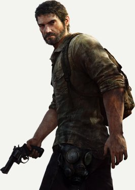
Pašerák zvyklý přežívat v nebezpečném světě. S Tess přijme úkol doprovodit Ellie; zprvu si vůči ní drží odstup.
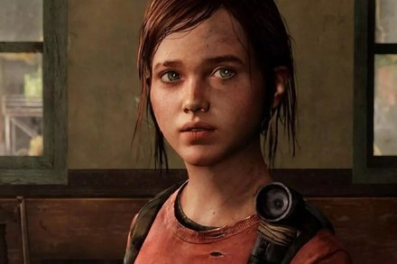
Dospívající dívka vyrůstající po katastrofě. Je zvídavá, umí se ozvat a pro cestu má význam její odolnost vůči infekci.
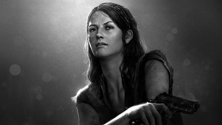
Joelova zkušená pašerácká partnerka. Vyjednává i riskuje; rozhodnutí pokračovat s Ellie pro ni přestane být jen obchod.
Neznáte hru? Použijte krátké popisy jako omezené zadání a přiznejte, co by bylo třeba ověřit. Vlastní znalost hry má přednost před zkratkou v popisu.
VHS · P06 · pracovní list 3/8 · 1. 11. 2026
Kingdom Come: Deliverance I / II — napište, který díl a etapu rozebíráte. Všechny tři ilustrace jsou z oficiálních materiálů KCD II.
Zvolte jednu část příběhu. Není nutné použít tři různé archetypy. Nerozhodujte podle povolání ani vzhledu.
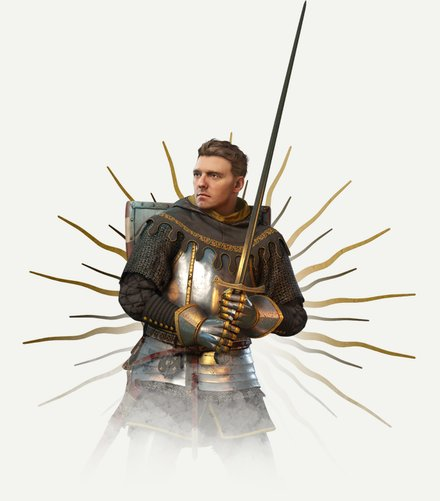
Syn kováře ze Skalice, jehož život převrátí válka. Učí se přežít, vstupuje do služeb šlechty a hledá odpověď na ztrátu rodiny.
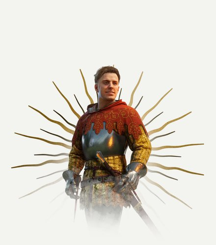
Mladý šlechtic s vědomím svého postavení, zálibou v zábavě i povinnostmi. Z napětí mezi ním a Jindřichem se rozvíjí přátelství.
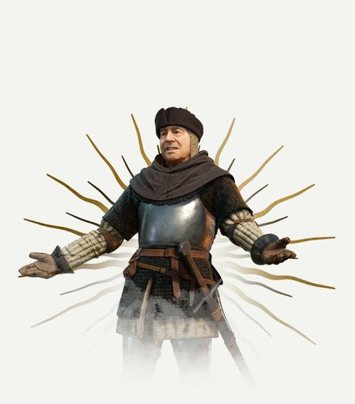
Nekonvenční venkovský kněz s bojovou minulostí. Dokáže pomoci slovem i mečem; jeho jednání se nevejde do obrazu bezchybného duchovního.
Neznáte hru? Použijte krátké popisy jako omezené zadání a přiznejte, co by bylo třeba ověřit. Vlastní znalost hry má přednost před zkratkou v popisu.
VHS · P06 · pracovní list 4/8 · 1. 11. 2026
Red Dead Redemption 2 — doporučený rámec: první polovina hry, než začnete řešit závěr Arthurova příběhu.
Zvolte jednu část příběhu. Není nutné použít tři různé archetypy. Nerozhodujte podle povolání ani vzhledu.
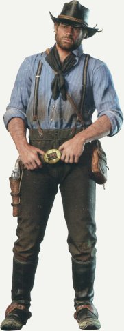
Dlouholetý člen gangu, který pro skupinu vykonává nebezpečnou práci. Jeho loajalita se střetává s vlastním úsudkem a důsledky společných plánů.
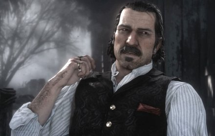
Charismatický vůdce slibující svobodu a lepší budoucnost. Ostatní sjednocuje vizí, zároveň od nich očekává důvěru a poslušnost.
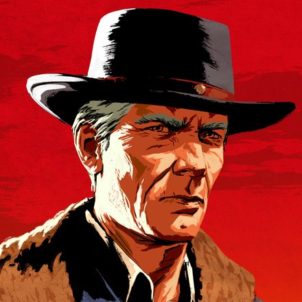
Zkušený podvodník a spoluzakladatel gangu. Dává přednost důvtipu před zbytečným násilím; s Dutchem sdílí minulost a Arthura zná od mládí.
Neznáte hru? Použijte krátké popisy jako omezené zadání a přiznejte, co by bylo třeba ověřit. Vlastní znalost hry má přednost před zkratkou v popisu.
VHS · P06 · pracovní list 5/8 · 1. 11. 2026
Doplňte třetího člena. Nemusí skupinu „vyvážit“ ani vyřešit všechny problémy. Má mít důvod s ostatními zůstat a měnit jejich rozhodování.
Chce dostat posádku a zachráněné lidi domů. Drží slovo a plánuje zásoby; po dřívější ztrátě člena posádky těžko připouští riziko. Ví, že bez Jonášových oprav nedoplave.
Chce dokázat, že jeho improvizované zařízení funguje. Má talent a odvahu, ale zatajuje neúspěšné zkoušky. Miru respektuje; její opatrnost považuje za brzdu.
Společná situace: Přichází nouzový signál z ostrova mimo trasu. Palivo nestačí na zajížďku i bezpečný návrat. Jonáš nabízí nevyzkoušenou úpravu motoru.
Původní didaktické postavy a situace. Více řešení může být smysluplných; rozhoduje popis vztahů a jejich projev ve scéně.
VHS · P06 · pracovní list 6/8 · 1. 11. 2026
Doplňte třetího člena. Nemusí skupinu „vyvážit“ ani vyřešit všechny problémy. Má mít důvod s ostatními zůstat a měnit jejich rozhodování.
Chce zveřejnit důkaz, že město staví svou slávu na lži. Je pečlivá a vytrvalá; někdy však považuje pravdu za důležitější než lidi, kterých se týká. Potřebuje Oskarovy kontakty.
Chce bezpečně odvézt svou rodinu z města. Umí smlouvat, improvizovat a obracet zákazy ve svůj prospěch. Leu tajně obdivuje, ale obchod není ochoten obětovat každé její zásadě.
Společná situace: Mají jediný průchod z hlídaného archivu. Úřad slíbí Oskarově rodině odjezd výměnou za originál dokumentu; zveřejnění může ohrozit i žijící svědky.
Původní didaktické postavy a situace. Více řešení může být smysluplných; rozhoduje popis vztahů a jejich projev ve scéně.
VHS · P06 · pracovní list 7/8 · 1. 11. 2026
Nejprve odhadněte motivace a archetypy dvou postav družiny. Potom na následujícím listu navrhněte dalšího člena.
Zkrácené popisy podle Sarindarských výsostných vod, oddíl „Vzorové postavy ke hraní“, s. 76–78 a 87–89. Nejsou to nové kanonické medailony; tajné informace pro PJ byly vynechány. Kresby jsou převzaté z finálního PDF označeného autorem.
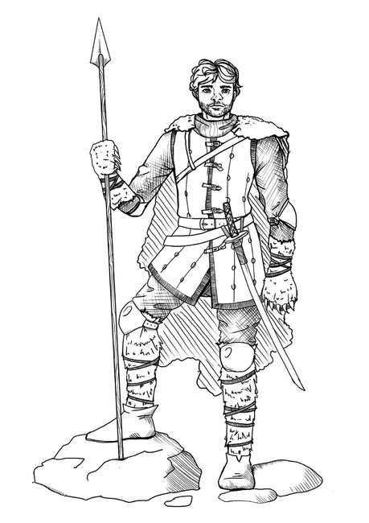
Vysoký svalnatý bojovník s rezavými vlasy, někdejší učeň kmenového šamana. Je málomluvný a přímý, spíš jedná, než mluví. Poté, co kostěj zpustošil skupinu jeho přátel, opustil Štítové hory a začal hledat slabiny myšlenkových bytostí. Od subotamských mnichů se učil lovu přízraků. Vyhledává znalosti, ale na žádost přítele Viléma je ochoten vlastní pátrání odložit a splatit mu dluh.
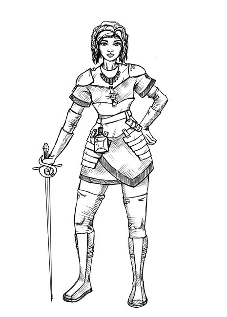
Mladá žena z bohaté erinské rodiny, s černým mikádem, modrýma očima a zálibou v kvalitním oblečení. Má prudkou povahu a ostrý jazyk, umí zacházet s kordem a přitahuje ji nebezpečí. Studovala u Dunriliny církve i mořskou faunu. Vyhledává společnost svobodných lidí a dobrodruhů; nesnáší nudu a samotu. Utekla z dohodnuté svatby a otec ji poslal na Mrtvého krakena. Peníze ji nelákají tolik jako nové zážitky.
Pro následující návrh neexistuje jediná předepsaná chybějící role. Můžete přidat spojence, zdroj napětí i zrcadlo jedné z postav — ale vysvětlete, proč by spolu zůstali.
VHS · P06 · pracovní list 8/8 · 1. 11. 2026
Navrhněte vlastní postavu k Hazharrovi a Saše. Je to studentský návrh, ne doplnění kánonu Asterionu.
Nová situace pouze pro cvičení: před dalším úsekem plavby se objeví zpráva o ostrově s nebezpečnou bytostí. Může nabídnout vědomosti i zážitek, ale zdržení ohrozí společnou cestu. Vaše třetí postava má vlastní důvod pro jednu z možností.
Při předání neprozrazujte svůj archetyp. Nechte druhý tým odhadnout motivaci a vztahy podle popisu a scény. Jiný dobře zdůvodněný výklad není chyba.
Referenční zařazení: Radek Richtr, Beyond the Hero: A Diachronic Study of Archetypal Shifts in Playable Protagonists Across Five Decades, camera-ready verze pro ICIDS 2026. Pomocný slovník: Writers Write — The 12 Common Archetypes. Přehled nepředstavuje výsledek empirického ověřování.
Obrázky nejsou vydávány za volně licencované. Obsahují herní rendery, propagační ilustrace a snímky, nikoli fotografie představitelů ze seriálu. Výukový materiál pro předmět VHS. Práva k ilustracím náleží uvedeným držitelům.